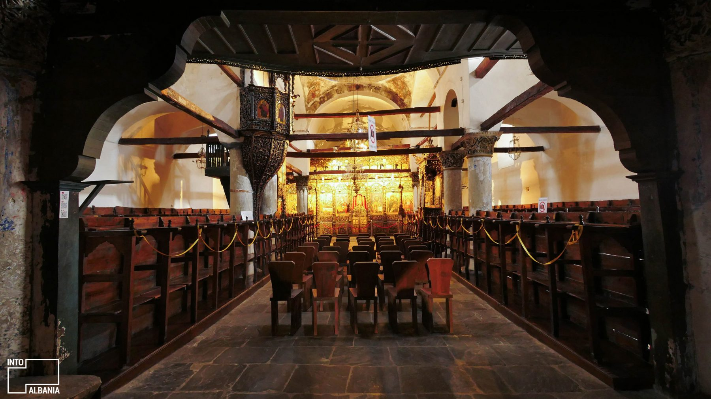
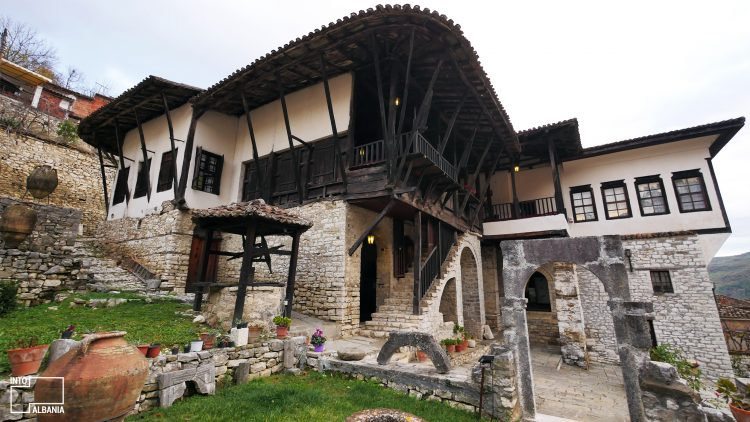
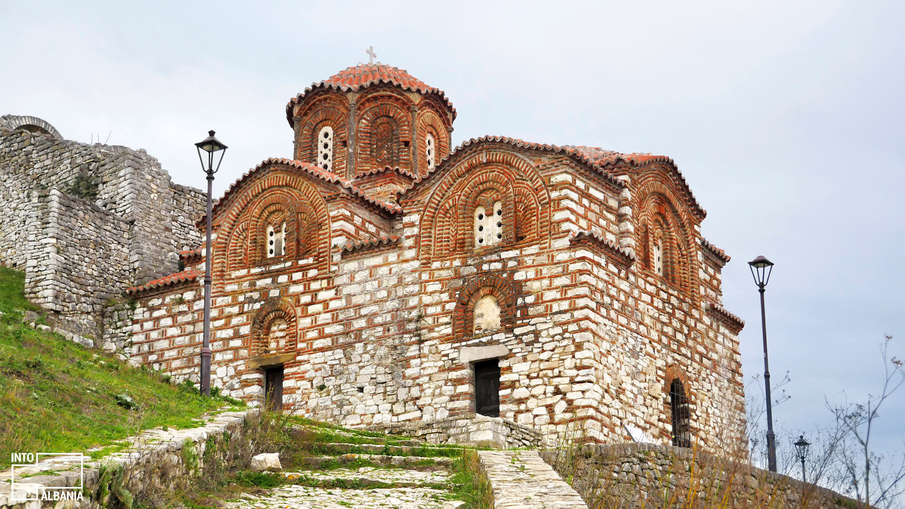
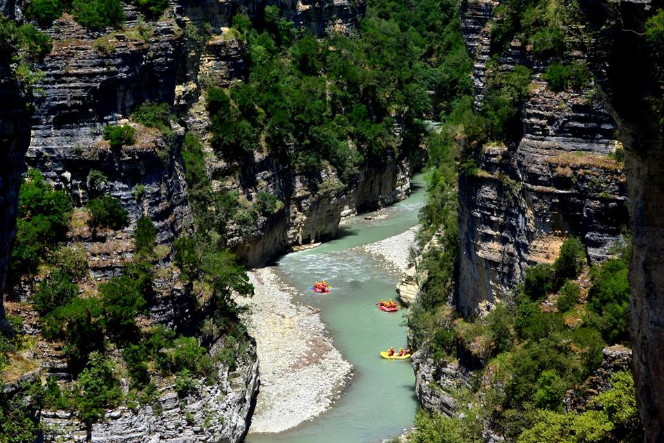
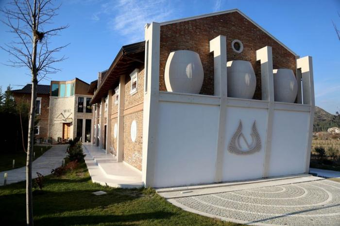

|
Muzeu Onufri

Muzeu Kombëtar Onufri në Berat është përshtatur në ambientet e Kishës “Fjetja e Shën Mërisë”, në Kalanë e Beratit, që prej 27 shkurtit të vitit 1986. Në të janë përfshirë një fond i pasur ikonografik dhe disa objekte të shërbesës. Në kete muze jane gjetur dy Kodiket e Beratit.Muzeu mban emrin “Onufri”, njëri prej kryemjeshtrave të pikturës shqiptare të shek.XVI. |
Muzeu Etnografik

Muzeu gjendet në një godinë dykatëshe trishekullore, tipike e trevës beratase. Në katin e parë është një sallë në të cilën është imituar një rrugicë mesjetare me dyqane tradicionale në të dy anët e saj. Në katin e dytë ndodhet çardaku i hapur për pritje miqsh. Në këtë kat ndodhen me radhë arkivi, tezgjahu, kuzhina dhe dhomat e pritjes. |
Kisha Shën Triadha

Kisha e Shën Triadhës është një nga më të vjetrat në qytet. Afresket murale në faqet e brendshme të kishës janë të dëmtuara për shkak të vjetërsisë. Megjithatë gjurmët e temave biblike që tregojnë dishepujt e Krishtit, elementë të “Darkës së Fundit” apo ditët dhe ritualet që i paraprijnë Pashkëve duken ende mbi muret e kishës. |
|
Kanionet e Osumit

Kanioni i Osumit, është më i madhi në gjithë vendin dhe me të drejtë është emërtuar “Grand Canyon e Shqipërisë”.
Kur udhëton në brendësi të tij mahnitesh nga bukuria befasuese. |
Kantina Nurellari

Një degustim i vecantë i verës në Kantinën Nurellari.Kantina ndodhet në fshatin e vogël të Fushe-Peshtan. E vendosur në një rrafsh të vogël në bazën e maleve dhe kodrave përreth, fshati është vendi i përsosur për të kultivuar rrush dhe ullinj. Kantina është themeluar në vitin 1995. |
Pika Panoramike

Pika Panoramike gjendet në lagjen Kala të Qytetit.Nga kjo pikë të ofrohet një pamje mahnitëse e Beratit. Në qoftë se vjen në Berat, ky është një vend që duhet të shkosh me patjetër. |